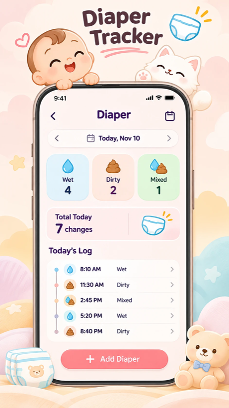

Baby Diary
A gentle baby tracker: feeding, sleep, diapers, growth and milestones, all in one simple daily diary for your baby's first years.
Features
- Track feeding — breastfeeding, bottle and solids — with times, amounts and side.
- Log sleep, naps and night sleep, and see how long your baby rested.
- Note every diaper change: wet, dirty or mixed.
- Follow growth with weight, height and BMI plotted on the WHO growth charts.
- Celebrate developmental milestones and follow the Wonder Weeks leaps by age.
- Keep the vaccination schedule and health notes, with reminders for what's next.
- A daily timeline, calendar and gentle reminders for the day's routine.
- A photo diary to remember each little moment as your baby grows.
- Daily, weekly and monthly statistics for feeding, sleep and diapers.
- Light and dark mode; available in English and Vietnamese.
- No account needed — your baby's data stays on your phone. Free to use, supported by ads.



Contact
Support, feedback and business enquiries: imangostudio.support@gmail.com